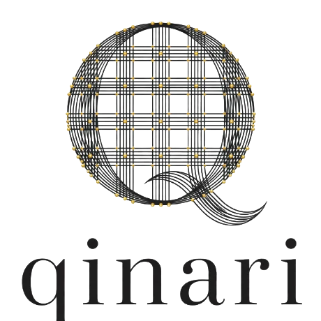

Qinari · SPV platform
One project, one vehicle. Every partnership ring-fenced.
Each partnership — a GPU cluster and its lease, a data-centre build, a new country — is its own special-purpose vehicle under the Qinari name, with its own assets, contracts, capital, lenders and returns. QORINAI operates every vehicle; partners invest only in the one they choose.

Why a vehicle per project
Infrastructure partners want to underwrite one asset, one contract set and one counterparty — not a whole company.
- 01 · RING-FENCINGRisk stays where it belongs
A construction delay on one site, or a lease event on one cluster, cannot touch the assets or cash flows of another vehicle. Each SPV stands on its own.
- 02 · CLEAN CAP TABLEPartners invest at project level
An energy partner joins the infrastructure vehicle; an equipment financier joins the compute vehicle. Nobody is asked to take exposure to businesses they did not choose.
- 03 · LENDER-READYSingle-purpose, asset-backed
Banks and equipment lenders underwrite a defined asset with a defined contract: GPUs and a lease, or land, power and a hosting agreement. No consolidation, no cross-default.
- 04 · ALIGNMENTSame vehicle, same outcome
QORINAI co-invests and operates each SPV under a services agreement, so the operator's return is tied to the same asset the partner owns.
- 05 · JURISDICTION FITIncorporate where the asset is
An Australian Pty Ltd for Australian assets; a local vehicle for an overseas market, with the same governance template and QORINAI operating it.
- 06 · EXIT OPTIONALITYSell, refinance or hold — one at a time
A vehicle can be refinanced once its asset is operating, or sold to an infrastructure buyer, without disturbing any other Qinari SPV or QORINAI itself.
The Qinari family
Three kinds of vehicle. One name, one operator.
Every SPV carries the Qinari name and a descriptor of what it holds. QORINAI Pty Ltd is the sponsor and operator of each one; project partners hold their interest in the vehicle that matches their capital.
Owns the cluster. Leases the compute.
A vehicle that procures and owns a GPU fleet — for example an NVIDIA HGX B300 cluster — and leases it to the end customer or hosting operator on a multi-year contract. QORINAI deploys, manages and maintains the fleet under an O&M agreement.
- Holds: servers, fabric, spares, warranties
- Contracts: equipment lease or capacity agreement, O&M with QORINAI
- Funded by: equipment finance and partner equity
- Returns: lease income over the term; residual value
Holds the land, the power and the hall.
A vehicle for a single data-centre project: site, grid connection, on-site generation and storage, and the building itself. The asset is leased or licensed to the operating business and its tenants; QORINAI develops, builds and operates it.
- Holds: land, connection rights, plant, buildings
- Contracts: development management, construction, hosting or lease, O&M with QORINAI
- Funded by: partner equity, project or construction debt
- Returns: hosting or lease income; asset re-rating
The same model, incorporated where the partner is.
QORINAI's chain — power, halls, hardware, operations and the IntraLLM platform — is replicable. For a market outside Australia we incorporate a local Qinari vehicle with a local partner, apply the same governance template, and operate it from Sydney with in-country teams.
- Holds: whatever the local project needs — compute, infrastructure or both
- Contracts: local partner agreement, QORINAI services agreement, hardware supply
- Funded by: local partner capital, export or development finance
- Returns: to the partners of that vehicle only
How it fits together
QORINAI operates. Qinari holds. Partners choose their vehicle.
The asset and its contracts
- Legal title to the equipment, land, plant or building
- Customer contracts: lease, capacity agreement or hosting agreement
- Project debt and security over the vehicle's own assets
- Partner shareholdings and the shareholders' agreement
- Ring-fenced bank accounts and monthly reporting
The people, the platform and the IP
- Engineering, deployment and 24×7 operations teams
- The IntraLLM platform and QORINAI's methods and designs
- Hardware supply relationship through strategic shareholder Hyperscalers
- Development-management, O&M and services agreements with each vehicle
- A co-investment in each vehicle alongside partners
From term sheet to operating vehicle
Five steps, the same every time.
Define the vehicle
Scope of assets, counterparties, jurisdiction and term. Compute, infrastructure or international — and which partners sit in it.
Incorporate and govern
Company incorporated under the Qinari name; shareholders' agreement on the common template: board, reserved matters, reporting, distributions, exit.
Contract the asset
Supply and construction on the way in; lease, capacity or hosting agreement on the way out; development-management and O&M with QORINAI; finance documents with lenders.
Operate and report
QORINAI runs the asset. The vehicle reports monthly to its shareholders and lenders: utilisation, availability, revenue, cost, covenants.
Refinance, hold or exit
Once operating, the vehicle can be refinanced on its own cash flows, held for yield, or sold — one vehicle at a time.
Beyond Australia
The chain is built to be replicated.
Power first, liquid-cooled halls, open-OEM hardware, 24×7 GPU operations and a private-AI platform are not Australia-specific. Qinari International vehicles let a partner bring that chain to their own market with QORINAI as operator and a local company as the asset owner.
Questions partners ask
Frequently asked.
Who owns a Qinari SPV?
The partners who invest in that specific vehicle, alongside a QORINAI co-investment. Ownership is set out in the vehicle's shareholders' agreement and does not extend to any other vehicle or to QORINAI Pty Ltd.
How does QORINAI earn from a vehicle?
Through its co-investment and through the services it provides to the vehicle — development management, deployment, operations and maintenance — under arm's-length agreements disclosed to all shareholders. Terms are set per vehicle.
Can a partner join one vehicle and not others?
Yes — that is the point of the structure. An equipment financier can hold a compute vehicle without any exposure to a construction project, and vice versa.
What do lenders see?
A single-purpose company with defined assets, a defined revenue contract and security limited to that vehicle. No consolidation with QORINAI and no cross-default with other Qinari vehicles.
Why the name Qinari?
Qinari — "core in fabric" — names the vehicles that hold the physical core QORINAI builds and operates. Each SPV is one thread; together they are the fabric of AI factories.
This page describes QORINAI's general approach to structuring partnerships. It is not an offer or a commitment to establish any vehicle. Terms, jurisdictions, shareholdings and economics are agreed per vehicle and documented under NDA.
Tell us which vehicle fits.
Compute, infrastructure or a market outside Australia — we will scope the SPV, the counterparties and the timeline.